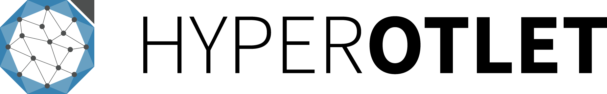

À propos
L’OpenDataSphère a pour but de représenter des données sous forme de réseau interactif, dans une page Web, sur la thématique de l’open data francophone. Ce projet s’inscrit dans le cadre d’un cours sur l’archivage et le partage des données de la LP MIND.
Il a été réalisé sur trois journées : l’enjeu était de réutiliser en accéléré le code et l’architecture du projet Otletosphère, et de constituer un nouveau jeu de données venant habiter cette structure.
La thématique de l’open data francophone étant très vaste, cette réalisation se concentre sur les grands acteurs. Elle distingue quatre types d'acteurs (représentés par des icônes) – personnes, organismes publics, organismes privés, outils – et quatre types d'open data – public, juridique, géographique, scientifique.
À l’exception des images, les contenus de ce site sont sous licence Creative Commons Attribution. CC BY Arthur Perret, LP MIND, HyperOtlet 2021.
LP MIND 2020-2021 : Florian Bucher, Aurélien Chaix-Renou, Zoé Dorizy, Mathilde Fernandez, Marie Ganter, Emma Hermet, Sophie Metsemaker, Aurore Quagiotto, Blandine Serre, Naxan Sewduth, Marine Vanderplaetsen.
Liens
